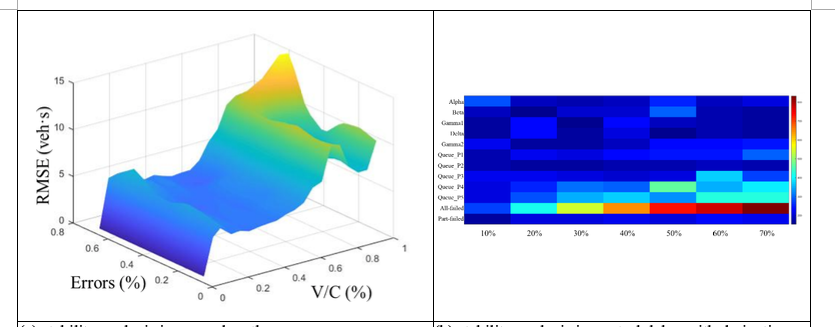

The purposes of this study are to propose the integrated predictive platform, including model-based and data-driven approaches, to not only secure improved accuracy for forecasting traffic profiles in real time but also guarantee a stable performance of the model against various levels of data availability. The proposed framework of lane-based traffic quantities consists of model-based estimation procedures and data-driven predictive processes.
There are several distinctive achievements of the proposed framework:
The trained CNN – LSTM architecture is used to predict lane-based traffic information and then, the outputs are used in lane-based estimation procedures, including queue lengths, control delay, and derivatives. Lane-based queue lengths and control delay are well predicted using CNN – LSTM predictive models. Moreover, derivatives are well fitted with the observed differences occurred by one second changed on the duration of green time. Accordingly, the integrated deep learning approach shows excellent performance to predict traffic profiles on an individual lane cycle-by-cycle. A stability analysis for each profile is given with a percentage of data availability. In Fig. 2(a) and 5(b), error percentages are described according increase in traffic volumes and parameters in control delay formula, respectively.
In the numerical results, it is found that the proposed method performs well in both estimations and predictions of the traffic quantities in an individual lane for a signal cycle. Moreover, it provides reliable predictions with respect to the error percentage of every single variable and is robust against the partial failure in the detecting system.
Reference: